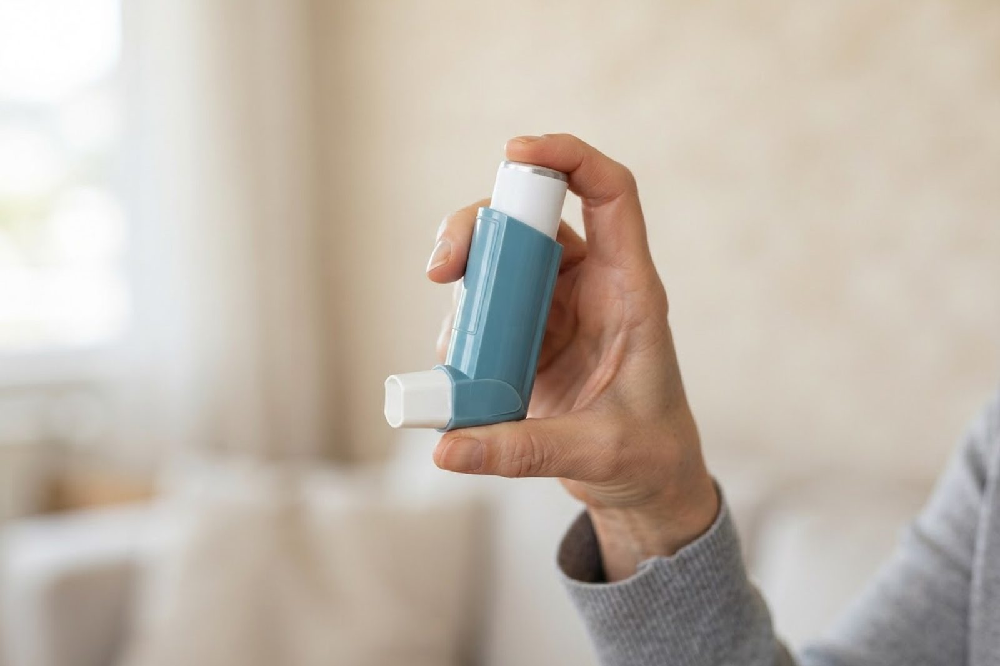

息をするとゼーゼー・ヒューヒューと音がします。喘息でしょうか？
A. 回答呼吸に合わせて聞こえる「ゼーゼー」「ヒューヒュー」という音は喘鳴（ぜんめい）と呼ばれ、空気の通り道（気道）が狭くなっているときに起こるとされています。大人でこの音が続く場合、気管支喘息はよくある原因のひとつですが、それだけとは限りません。COPD（慢性閉塞性肺疾患）や心不全、気道の感染症などが背景にある場合もあり、原因によって対応が変わります。喘息は子どものころだけの病気と思われがちですが、大人になってから発症することもあり、風邪をひいたあとに咳と喘鳴だけが長く残るという形で気づかれることもあります。まずは内科・呼吸器内科で、原因を整理するところから始めるのが一般的です。

喘鳴（ゼーゼー・ヒューヒュー）の一般的な原因
喘鳴は病名ではなく症状の名前で、次のような原因が知られています。
- 気管支喘息：気道に慢性的な炎症が起こり、刺激に反応して気道が狭くなる状態とされています。夜間から早朝にかけて症状が強まりやすく、喘鳴・咳・息苦しさが発作的に現れるのが特徴とされます。
- アレルギーが関与する喘息：ダニ・ハウスダスト・花粉・ペットなどが引き金になる場合があります。アレルギー性鼻炎やアトピー性皮膚炎を併せ持つ方もいます。
- COPD（慢性閉塞性肺疾患）：長期の喫煙などが関係するとされ、中高年の方に多く、慢性的な咳・痰や坂道での息切れを伴うことがあります。
- 心不全による喘鳴：心臓のはたらきが低下して肺に水分がたまり、喘息に似た呼吸音が出る場合があります。横になると苦しい、足がむくむといった症状を伴うことがあります。
- 気道の感染症や、その後の一時的な気道の過敏：気管支炎などのあとに、しばらく咳や喘鳴が残ることがあります。
受診の目安
喘鳴は自然に治まることもありますが、様子を見ないほうがよい場合もあります。
判断に迷われるときは、救急安心センター事業「＃7119」（岡山県内で利用できます）にご相談いただけます。総務省消防庁の「全国版救急受診アプリ（Q助）」も目安になります。
すぐに受診を検討してください
- 会話が途切れて続けて話せない、唇や爪の色が青紫・白っぽい、苦しくて動けない、意識がぼんやりしている：喘息の重い発作（大発作）などでみられる状態とされ、この場合はためらわず救急要請（119番）をご検討ください
- 息苦しくて横になれない、座っていないと呼吸がつらい
- 急に強い息苦しさが出た、胸の痛みを伴う
- いつもの吸入などで対処しても、症状がくり返し戻ってしまう
- 食べ物や異物をのどに詰まらせた直後から音が出はじめた
早めの受診をおすすめします
- ゼーゼー・ヒューヒューが数日以上続いている、繰り返している
- 夜間や明け方に咳や息苦しさで目が覚めることがある
- 階段や坂道での息切れが以前より強くなってきた
- 風邪は治ったのに咳や喘鳴だけが残っている
- 特定の季節・場所・ペットとの接触で症状が出やすい
- 喫煙歴がある、またはご家族に喘息やアレルギーの方がいる
当院での対応
いなだ医院は内科・呼吸器内科に加えてアレルギー科・循環器内科を標榜しており、喘鳴の背景として気管支喘息を考える場合も、心臓や他の病気の可能性を整理したい場合も、まとめてご相談いただけます。診察では、いつ・どんなときに音が出るかをうかがい、聴診で呼吸音を確認したうえで、必要に応じて胸部レントゲンや血液検査、呼吸機能検査などを行い、状態に応じた対応をご提案します。アレルギーの関与が疑われる場合には、何に反応しやすい体質かを調べる検査についてもご相談いただけます。当院は朝7時から診療しており、お仕事前の受診も可能です。診断や治療方針は診察の結果によって異なりますので、まずはお気軽にご来院ください。
受診時に伝えていただきたいこと
- いつから、どのくらい続いているか
- どんなときに起こりやすいか（夜間・早朝、運動後、季節や場所など）
- 咳や痰、息切れ、動悸、むくみなど、ほかに気になる症状はあるか
- これまでの喘息やアレルギーの指摘、喫煙歴、現在服用中のお薬
参考にした情報
ゼーゼー・ヒューヒューが続くとき、夜間の咳で眠れないときは、我慢せずご相談ください。
最終更新：2026年8月26日